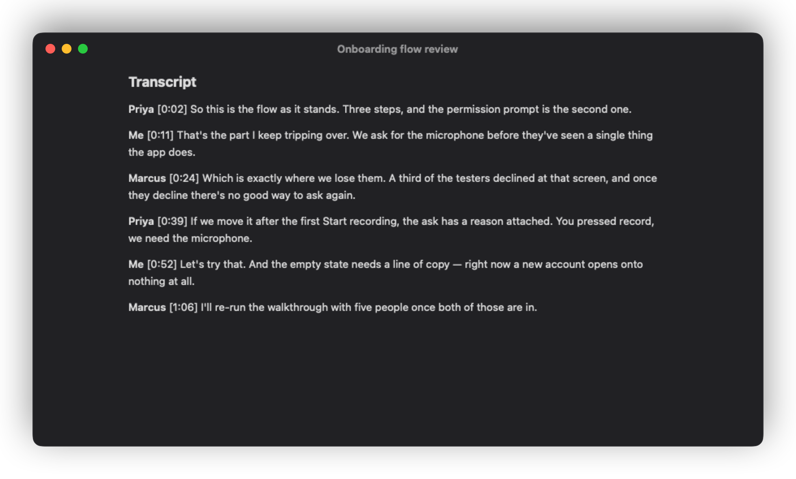

Record from your menu bar.Get a prompt when a call begins.
Live text and answers from the call, close at hand.
Follow the transcript with speaker labels and timestamps.

A summary and action items.Saved as Markdown in your folder.